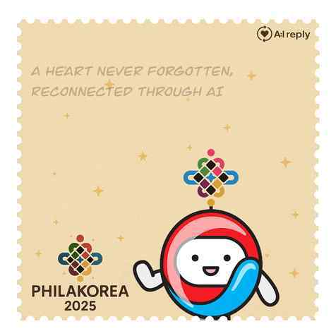
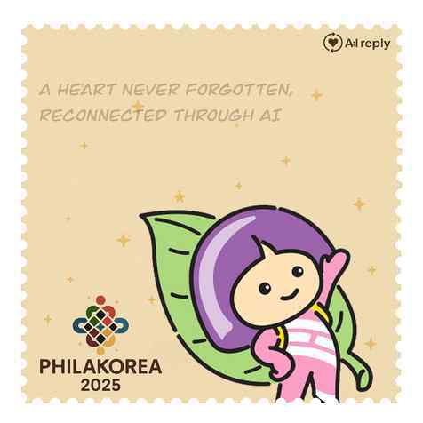
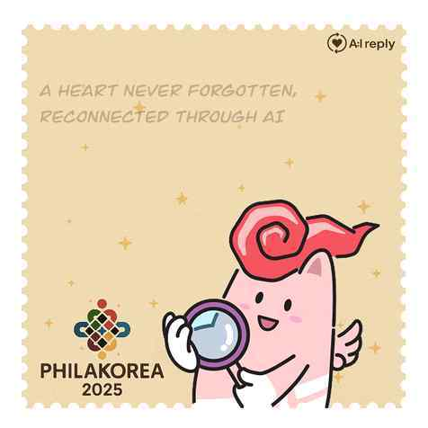

Project 02
17
Project 02 / AI:REPLY
AI가 답장하는 경험으로
다시 편지를 쓸
이유를 만들었습니다.
한국우편사업진흥원 · 2025 세계우표전시회(필라코리아) 사전 홍보 부스
사전부스 운영 이후 본행사 운영 요청으로 이어졌습니다.
기간 2025.03 – 06 |
팀 종이비행기 6인 |
담당 대상 범위 제안 · 프롬프트 공동 제작 · 우표/홍보지 디자인 · 사후 설문 설계



Overview / 기관의 니즈를 참여 경험으로 구체화
18
“AI를 활용하고 싶다”는 기관의 니즈를
편지 문화와 맞는 체험으로 연결했습니다.
손편지 사용 빈도를 늘릴 방안이 필요했고, 기관은 AI 도입을 원했습니다. 팀은 손편지를 쓰고 답장을 받는 경험에 AI를 더했습니다.
01
마음을 쓰기
지금 닿기 어려운 대상에게
직접 손편지를 작성합니다.
02
AI 답장 만들기
편지에 담긴 기억과 대상의 말투를
반영해 답장을 생성합니다.
03
실제 편지로 받기
편집을 거쳐 우편 또는 현장에서
종이 편지로 전달합니다.
팀의 제안
AI를 통해 답장을 받는 경험이 손편지를 쓰는 동기가 되도록 설계한다.
My Decision / 참여자가 느낄 거부감에서 출발
19
‘누구에게 쓰는 편지인가’가
참여의 문턱을 바꿀 수 있다고 봤습니다.
처음 마주한 표현
고인에게 쓰는 편지
직접적인 표현이 참여자에게 부담을 줄 수 있고, 참여 대상을 좁힐 가능성이 있다고 판단했습니다.
내가 제안한 확장
지금 닿기 힘든
대상에게 쓰는 편지
반려견 · 오래된 장난감 · 애니메이션 캐릭터까지 대상을 넓히자는 아이디어를 제안했습니다.
실제 반영 범위
‘하늘나라’라는
표현으로 정리
운영 안내 문구는 완화되었지만, 대상 범위를 넓히는 제안 전체가 채택된 것은 아닙니다.
판단의 근거
기술을 어떻게 보여줄지보다 참여자가 첫 문장을 쓸 수 있는지가 체험의 성패를 가른다고 봤습니다. 대상을 넓히면 같은 구조로 더 많은 사람이 편지를 시작할 수 있습니다.
Solution / 답장 품질을 결정하는 조건과 제작물
20
답장처럼 느껴지려면
대상의 말투와 편지의 분량이
맞아야 했습니다.
조건이 부족한 요청
“이 편지에 따뜻하게 답장해 줘.”
대상 고유의 말투나 분량을 지정하지 않으면 누구에게나 비슷한 답이 나올 수 있습니다.
설계 의도를 담은 요청
“대상의 성격과 말투를 반영하고, 받은 편지의 구체적인 기억에 답해 줘. 편지지를 채울 수 있는 분량으로 작성해 줘.”
분량과 캐릭터 말투를 함께 조정했습니다.
실제 기여
프롬프트를 공동 제작했고, 제가 만든 결과물은 팀 내 답장 예시로 활용됐습니다.
답장 문장·프롬프트는 재구성한 예시입니다
내가 맡은 제작과 검증
직접 제작한 우표 디자인 — 필라코리아 2025 캐릭터 기반
우표 · 설문조사 홍보지 디자인
사후 설문조사 설계 · 현장 운영 공동 참여
설문에서 확인한 주제 — 편지 만족도 / 프로그램 전반 만족도 / 향후 편지·우표 이용 의향
Result & Review / 사전 체험에서 본행사 운영 요청까지
21
작은 사전부스의 제안이
세계우표전시회 본행사 운영 요청으로 이어졌습니다.
기관이 요청한 다음 단계
본행사
운영 요청
편지 문화와 AI를 결합한 접근을
기관이 긍정적으로 평가
팀의 AI 답장 생성 기록
56개
전달 수가 아닌 생성 완료 수입니다.
확장된 범위
사전 전시회에 이어 필라코리아 2025 본행사 부스 운영을 제안받았고, 12월 운영한 우표박물관에는 AI 체험관이 추가됐습니다.
계속 가져갈 관점
AI를 보여주는 데서 끝내지 않고, 왜 편지를 쓰게 되는지와 어떤 답장을 받고 싶은지를 함께 고민했습니다. 기술의 새로움보다 기존 문화와 맞는 경험이 제안의 설득력을 만들었습니다.
남아 있는 질문 · 다음 실험
표현을 부드럽게 바꾸는 것과 대상 범위를 넓히는 것은 다른 결정입니다. 기관이 허용하는 대상 안에서 안내 문구를 비교하고, 참여 의향과 실제 편지 작성 완료율을 함께 확인하고 싶습니다.